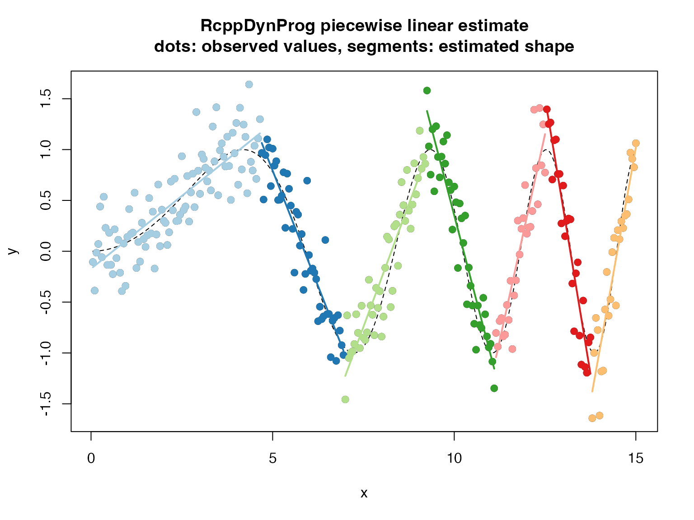

In this example we fit a piecewise linear function to example data.
Please see here for a discussion of the methodology.
library("RcppDynProg")
set.seed(2018)
g <- 100
d <- data.frame(
x = 0.05*(1:(3*g))) # ordered in x
d$y_ideal <- sin((0.3*d$x)^2)
d$y_observed <- d$y_ideal + 0.25*rnorm(length(d$y_ideal))
# plot
plot(d$x, d$y_observed,
xlab = "x", ylab = "y",
main = "raw data\ncircles: observed values, dashed line: unobserved true values")
lines(d$x, d$y_ideal,
type = "l",
lty = "dashed")## x pred group what
## 1 0.05 -0.1570880 1 left
## 2 4.65 1.1593754 1 right
## 3 4.70 1.0653666 2 left
## 4 6.95 -0.9770792 2 right
## 5 7.00 -1.2254925 3 left
## 6 9.20 0.8971391 3 right
## 7 9.25 1.3792437 4 left
## 8 11.10 -1.1542021 4 right
## 9 11.15 -1.0418353 5 left
## 10 12.50 1.1519490 5 right
## 11 12.55 1.3964906 6 left
## 12 13.75 -1.2045219 6 right
## 13 13.80 -1.3791405 7 left
## 14 15.00 1.0195679 7 rightd$estimate <- approx(x_cuts$x, x_cuts$pred, xout = d$x, method = "linear", rule = 2)$y
d$group <- as.character(findInterval(d$x, x_cuts[x_cuts$what=="left", "x"]))## [1] 20.42462## [1] 3.536541## [1] 20.53796# plot
plot(d$x, d$y_observed,
xlab = "x", ylab = "y",
main = "RcppDynProg piecewise linear estimate\ndots: observed values, segments: estimated shape")
points(d$x, d$y_ideal,
type = "l",
lty = "dashed")
cmap <- c("#a6cee3",
"#1f78b4",
"#b2df8a",
"#33a02c",
"#fb9a99",
"#e31a1c",
"#fdbf6f",
"#ff7f00",
"#cab2d6",
"#6a3d9a",
"#ffff99",
"#b15928")
names(cmap) <- as.character(seq_len(length(cmap)))
points(d$x, d$y_observed, col = cmap[d$group], pch=19)
groups <- sort(unique(d$group))
for(gi in groups) {
di <- d[d$group==gi, , drop = FALSE]
lines(di$x, di$estimate, col = cmap[di$group[[1]]], lwd=2)
}